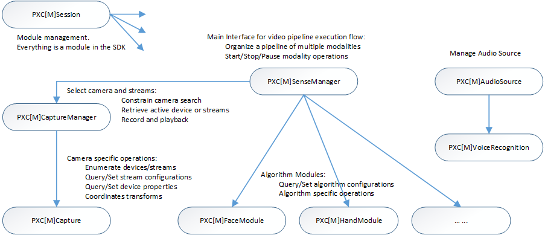

Programming Guide: Concept and Streaming |
Top Previous Next |
|
The SDK consists of multiple C++/C# interfaces. Figure 9 illustrates the interface hierarchy.  Figure 9: SDK C++/C# Interface Hierarchy The PXC[M]Session interface manages the following modules: I/O modules, algorithm modules, and any other SDK interface implementations. First you need to create an instance of the PXC[M]Session interface (through the CreateInstance function) in your application, and then create other module instances from the PXC[M]Session instance. See Session and Modules for basic concepts. For predefined usages such as hand tracking and face tracking, you can use the PXC[M]SenseManager interface. This interface organizes a multi-modal pipeline (that contains an I/O device and multiple algorithm modules) and controls the execution of the pipeline such as starting, stopping, pausing and resuming the pipeline. To create the PXC[M]SenseManager instance, use the CreateInstance function. Internally, the PXC[M]SenseManager interface uses the PXC[M]CaptureManager interface to select the I/O device and color/depth/audio streams. Retrieve the PXC[M]CaptureManager instance (from the PXC[M]SenseManager interface) to constrain the device search and/or to set file recording and playback during the pipeline initialization. You can subsequently retrieve the PXC[M]Capture interface for physical camera operations, such as enumerating devices/streams, and querying stream configurations and device properties. See I/O Device Operations for more details. During the pipeline execution, when some samples are ready from the I/O device, you can access the captured samples through the PXC[M]Image interfaces, which abstract the image buffers. When an algorithm module in the pipeline is ready with some processing results, you need to access algorithm specific interfaces, such as PXC[M]HandModule for hand tracking and PXC[M]FaceModule for face tracking. These interfaces provide algorithm specific functions to query/set algorithm configurations and algorithm data. The audio path is a bit different where the application manages the audio source through the PXC[M]AudioSource interface, and specific voice features directly in the module interface, for example, PXC[M]SpeechRecognition.
|